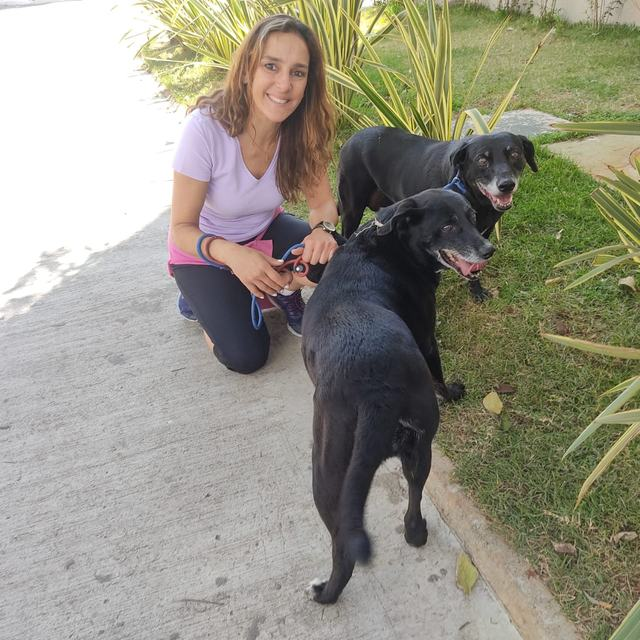

Passeios
Passeio individual, pensado conforme o ritmo, o comportamento e as necessidades do cão.
Solicitar pelo formulárioPati MundoPet
Preparando o passeio
Atendimento feito pela Pati, com detalhes, disponibilidade e valores combinados diretamente pelo WhatsApp.

A Pati acompanha pessoalmente os atendimentos e conversa com cada responsável para entender a rotina, o comportamento e as necessidades do cão.
São mais de 30 anos dedicados aos animais, entre o cuidado direto com pets e o trabalho de resgate de cães — uma trajetória que traz experiência de verdade para cada passeio e atendimento.
Seu trabalho também se conecta a projetos de proteção e bem-estar animal, apresentados nesta página com seus perfis reais.
Passeio individual, pensado conforme o ritmo, o comportamento e as necessidades do cão.
Solicitar pelo formulárioCuidado durante o dia. Detalhes, condições, disponibilidade final, valor e pagamento via Pix são combinados com a Pati pelo WhatsApp.
Solicitar pelo formulárioCuidado combinado diretamente com a Pati. Detalhes, disponibilidade e valores são definidos pelo WhatsApp.
Combinar pelo WhatsAppEnvie a pré-solicitação pelo formulário.
A Pati analisa os dados e conversa com você pelo canal informado.
Disponibilidade, valor e pagamento via Pix são combinados diretamente.
O atendimento só fica confirmado depois da resposta da Pati.
Fotos da Pati e dos cães durante os atendimentos. Arraste para girar.
Ao longo de sua atuação, a Pati já colaborou com iniciativas dedicadas à proteção e ao bem-estar animal. Conheça alguns desses projetos.
Consulte a disponibilidade e envie uma pré-solicitação de Passeios ou Dog Day Care para análise da Pati.
Fale diretamente com a Pati para tirar dúvidas sobre passeios ou dog sitter.
Falar no WhatsApp